01 / Location
ロケーションの選定
車種・ボディカラー・撮影時間から逆算し、映り込みが暴れない場所を選びます。 行きつけの峠やご自宅のガレージでも撮影できます。
Automotive Photography — Kansai, Japan
関西を拠点に、クルマだけを撮り続けてきました。
旧車、希少車、そして手放す前の最後の一枚まで。
オーナー様の記憶に残る写真を、出張で撮影します。
ご相談・お見積もりは無料です
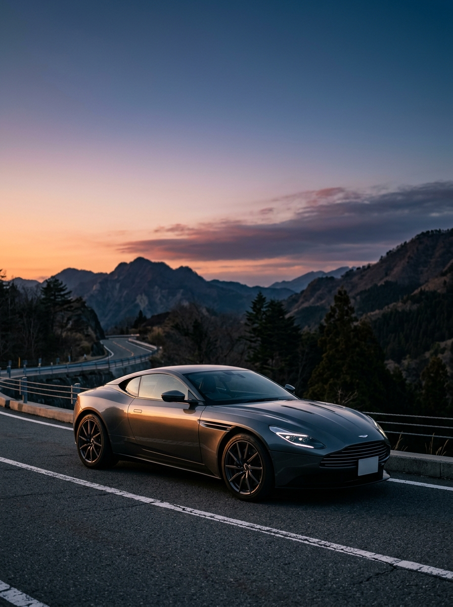
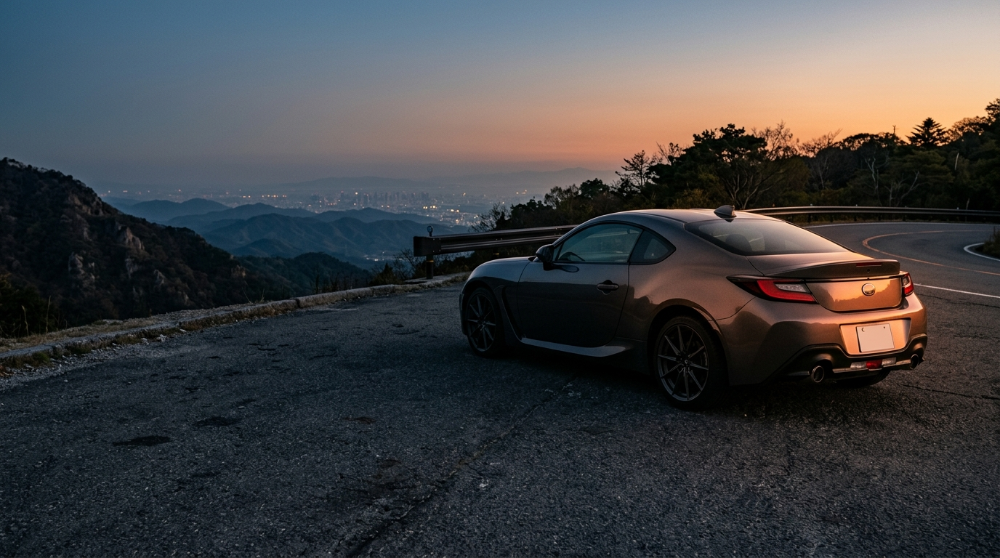
Problem
洗車をして、光がいい時間を狙って、何十枚もシャッターを切った。 それなのに、見返すと「実物のほうが、ずっとカッコいい」。
うまく撮れないのは腕のせいではありません。 クルマは、光の当たり方だけで別の顔になります。
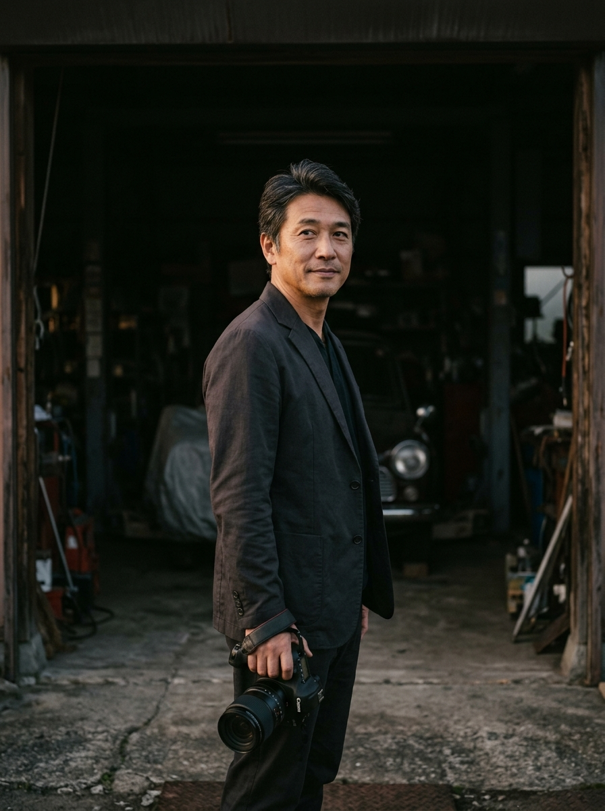
中森 健也 / Kenya Nakamori
Message
20代の頃、無理をして手に入れた一台がありました。休みのたびに磨いて、峠に走りに行って、 間違いなく人生で一番のクルマでした。
それなのに手元に残っているのは、駐車場で適当に撮ったスナップが数枚だけ。 手放して何年も経った今でも、ちゃんと撮っておけばよかったと思い出します。
だから私は、クルマだけを撮る道を選びました。 オーナー様が愛車に注いできた時間を、写真という形で残す。それがこの仕事です。
SHUTTER GARAGE 代表 / フォトグラファー
Solution
ご指定の場所へ機材一式を持って伺い、そのクルマにいちばん似合う光の下で撮影します。 スタジオへの持ち込みも、面倒な段取りも必要ありません。
01 / Location
車種・ボディカラー・撮影時間から逆算し、映り込みが暴れない場所を選びます。 行きつけの峠やご自宅のガレージでも撮影できます。
02 / Lighting
日没前後の限られた時間帯を軸に、必要に応じてライティング機材を使用。 濃色車の塗り潰れや白飛びを起こさずに立体感を出します。
03 / Retouch
不要な映り込みや背景の処理まで一枚ずつ調整。SNS用のトリミングから、 プリントに耐える高解像度データまでご用意します。
Benefit
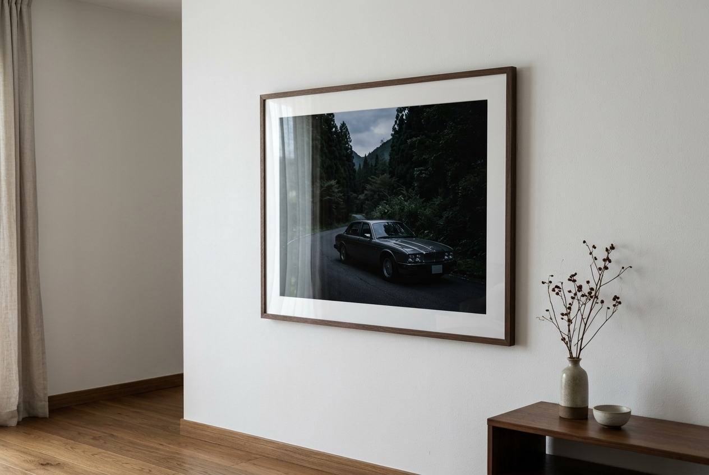
大判プリントに耐える画質で納品するため、額装してリビングやガレージに飾れます。 スマホの中に埋もれず、毎日目に入る場所に置ける写真になります。
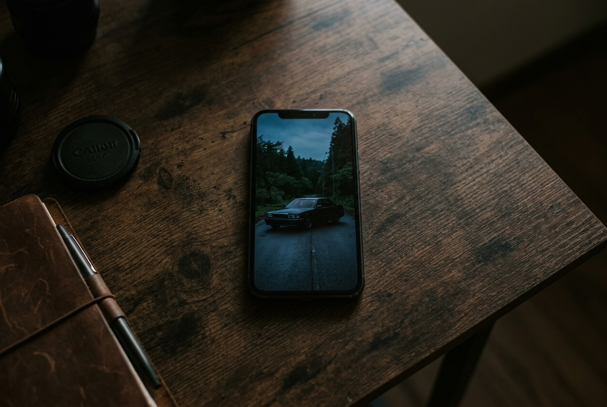
同じ車、同じ場所でも、光の作り方でここまで変わるのかと驚かれます。 縦位置・正方形など、投稿先に合わせたトリミングもあわせてお渡しします。
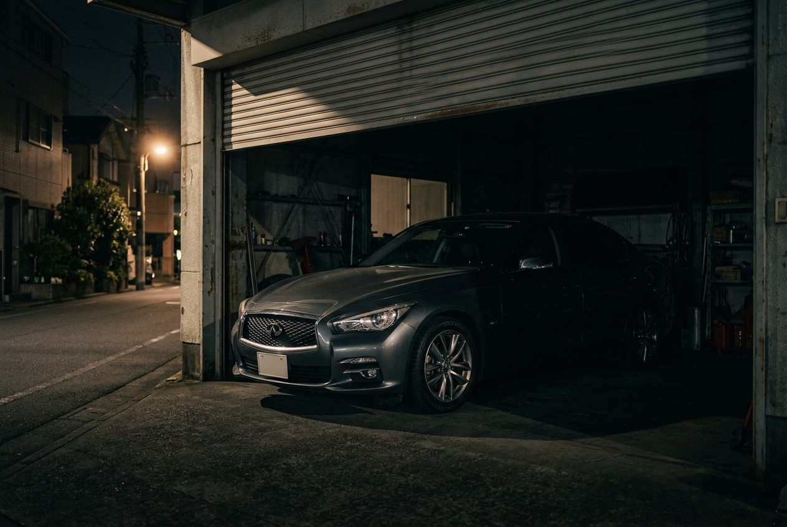
納車直後、レストア完了、そして手放す直前。クルマとの関係が節目を迎えるたび、 その一台と過ごした時間を記録として残せます。
Works
撮影地と、シャッターを切った時間を添えています。
同じ場所でも、数分の違いでクルマの表情は変わります。
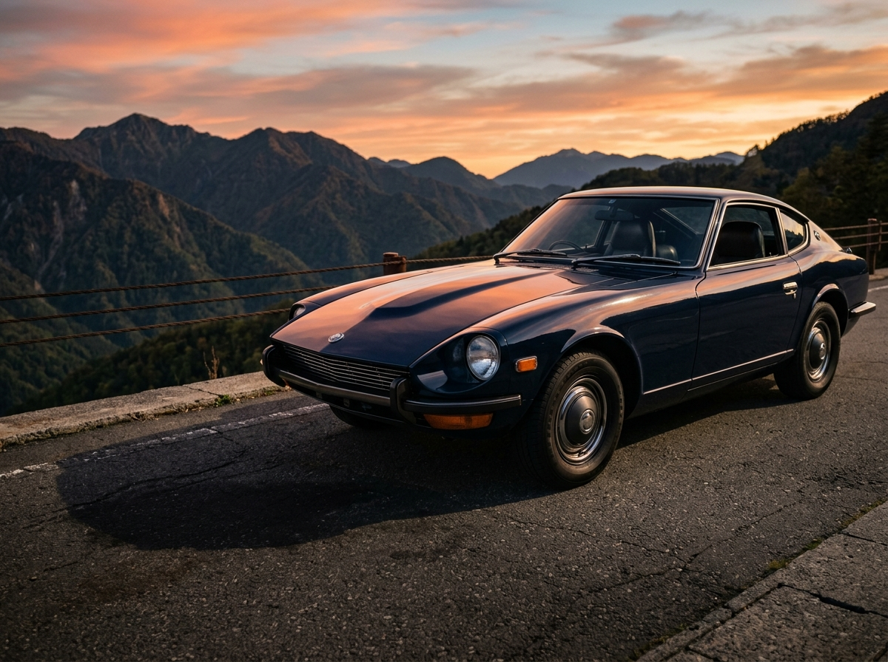
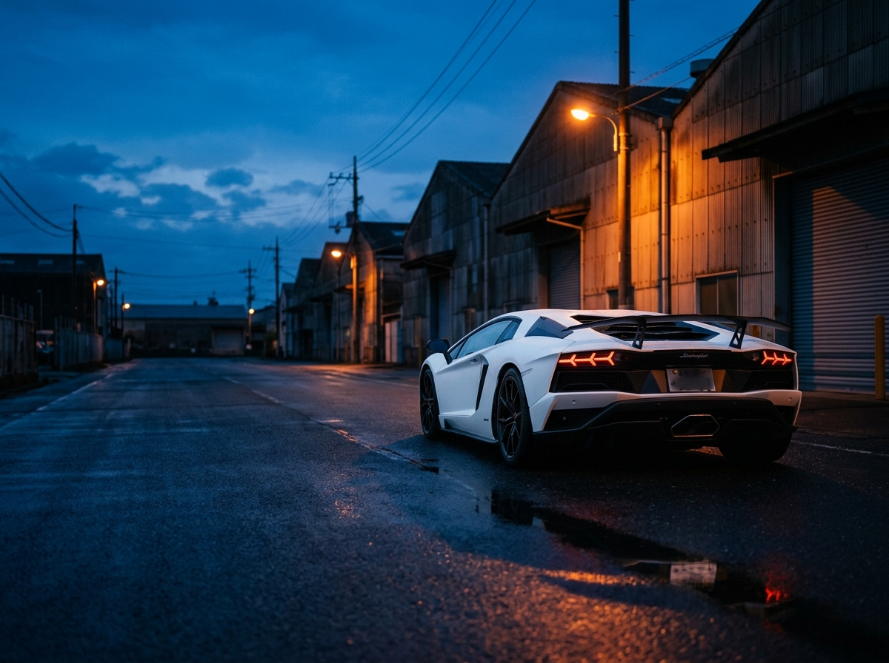
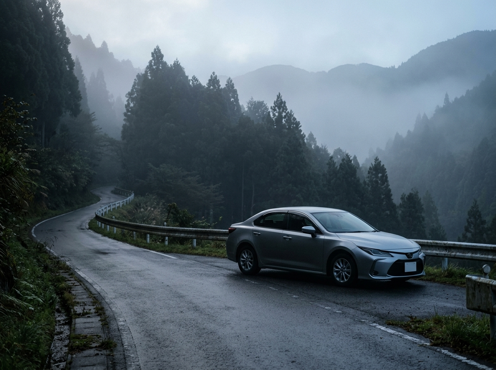
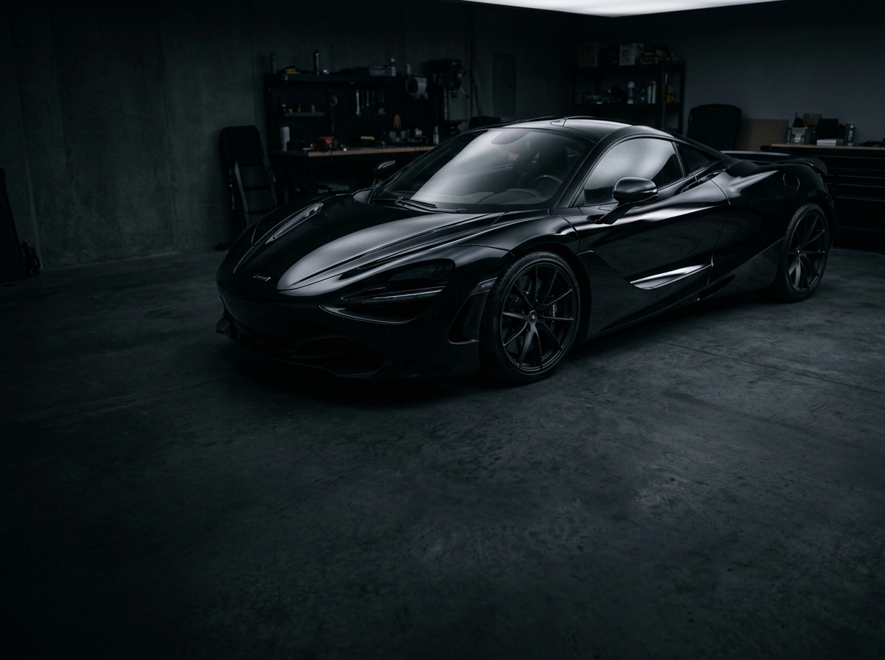
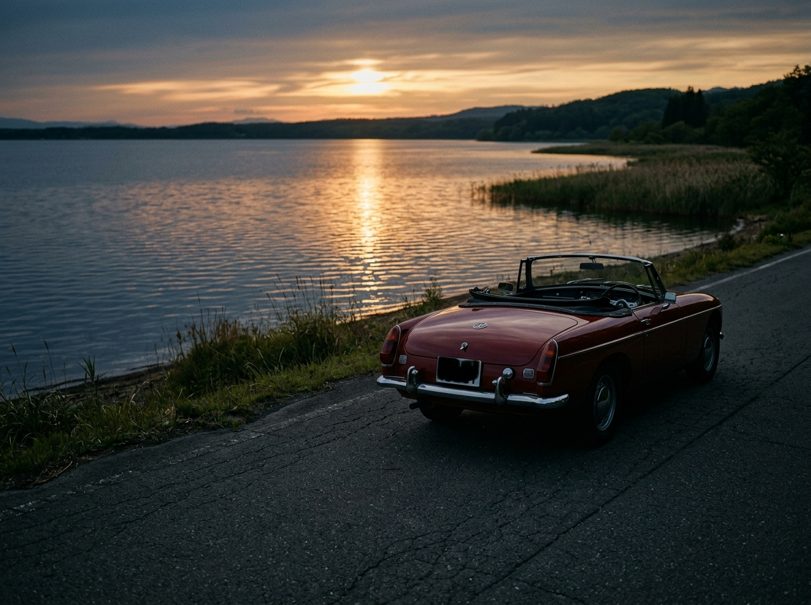
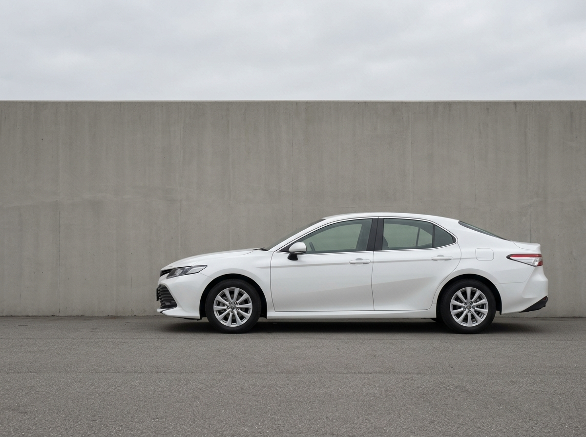
Voice
20年乗った車を手放すことになり、最後に頼みました。仕上がりを見た瞬間、 家族の前だったのに言葉が出ませんでした。今はリビングに飾っています。
黒い車なので自分で撮ると必ず自分が映り込んでいました。仕上がりはボディラインが しっかり見えていて、同じ車とは思えないほどです。
出品用にお願いしましたが、写真を変えただけで問い合わせの数が明らかに増えました。 撮影中も車の話で盛り上がって、こちらが楽しかったです。
「うちの車でも大丈夫ですか？」
そのひと言から、お気軽にどうぞ。
Plan
車種・撮影場所・カット数によって内容が変わるため、料金は個別にお見積もりします。 まずはご希望をお聞かせください。
Plan A
一台を、じっくり
愛車一台に集中して撮影する基本プラン。走行カットから細部のディテールまで、 一台の魅力を余さず記録します。
料金は要お見積もり
Plan B人気
オーナー様と、ともに
クルマだけでなく、オーナー様やご家族も一緒に。運転する姿やドアを開ける手元まで、 その一台との関係を残します。
料金は要お見積もり
Plan C
売却・出品のために
オークションや個人売買での出品を想定した記録撮影。外装・内装・機関部を均一な光で、 状態が正しく伝わるように撮ります。
料金は要お見積もり
※レストア記録・イベント帯同・動画撮影などもご相談を承っています。
Flow
01
車種・ご希望のエリア・撮影したい時期をお送りください。内容が固まっていなくても構いません。
02
プランと概算費用をご提示します。ご納得いただいてから撮影日を決定します。
03
車種と光の条件から候補地をご提案。ご希望の場所があればそちらで撮影します。
04
現地集合で撮影開始。仕上がりのイメージはその場でご確認いただけます。
05
レタッチ後、約2週間でオンライン納品。プリントのご注文も承ります。
Offer
いきなり撮影を決めていただく必要はありません。 ご相談いただいた方には、次の3つを無料でお渡ししています。
車種とボディカラーを伺い、関西圏で相性のいい撮影地を具体的にお伝えします。
ご希望の内容をもとに、費用の目安をその場でご案内します。
ご自身で撮影される際にも使える、光の時間帯の考え方をお送りします。
相談のみのご利用も歓迎です。しつこい営業は一切いたしません。
Area & Limit
対応エリア
大阪 / 京都 / 兵庫
奈良 / 滋賀 / 和歌山
中部・中国・四国方面への出張も承っています。エリア外の方も一度ご相談ください。
月の撮影本数
月 6 組 まで
一台ごとに光を待つ時間を確保するため、本数を限らせていただいています。週末と日没帯は特に埋まりやすくなっています。
FAQ
Contact
ご相談・お見積もりは無料です。
車種と、撮りたいイメージだけ送ってください。あとはこちらでご提案します。
LINEをご利用でない方は info@shutter-garage.jp までご連絡ください。